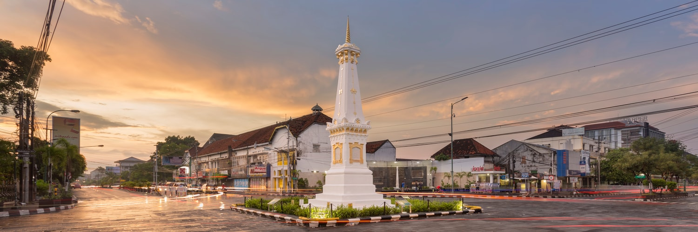

Daerah Istimewa Yogyakarta, disingkat DIY atau DI Yogyakarta adalah daerah Istimewa setingkat provinsi di Indonesia yang merupakan peleburan dari Negara Kesultanan Yogyakarta dan Negara Kadipaten Paku Alaman.
Kabupaten dan Kota di Daerah Istimewa Yogyakarta:
- Kota Yogyakarta
- Kabupaten Bantul
- Kabupaten Sleman
- Kabupaten Gunungkidul
- Kabupaten Kulon Progo
